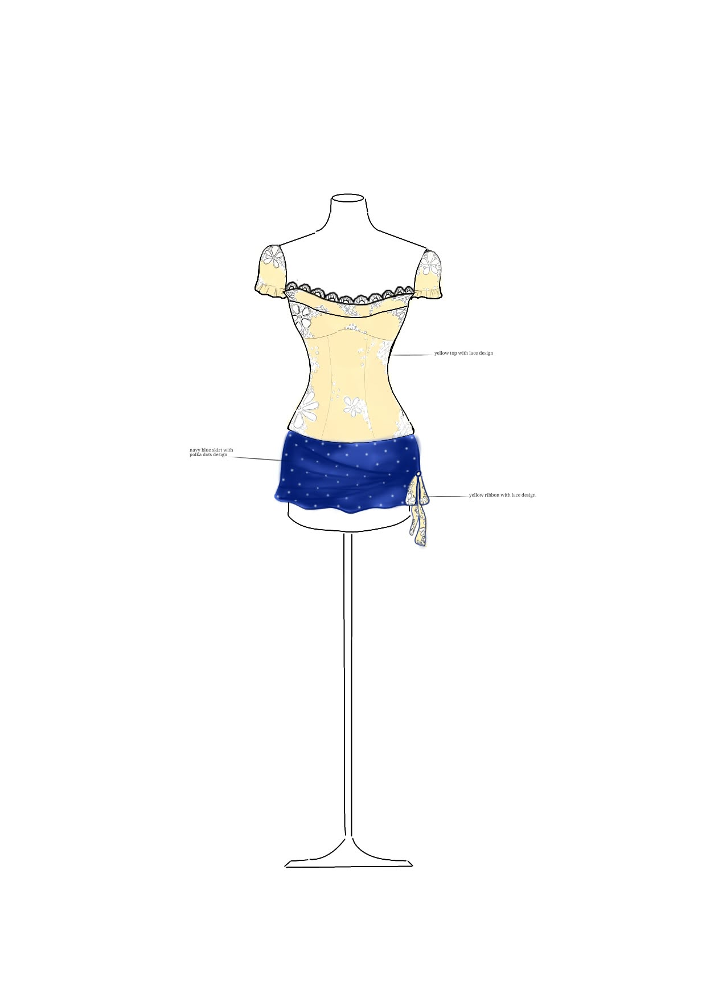
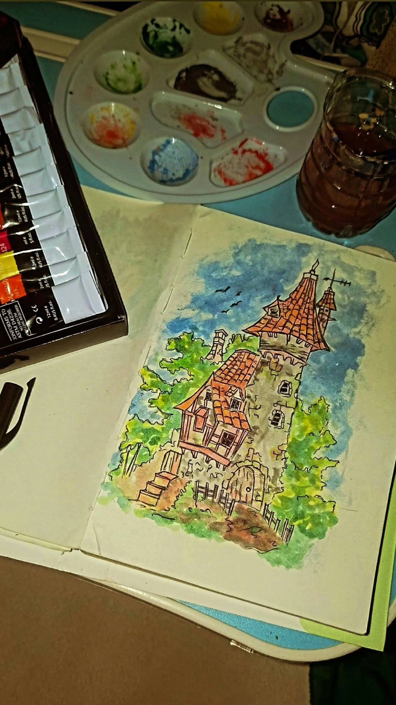
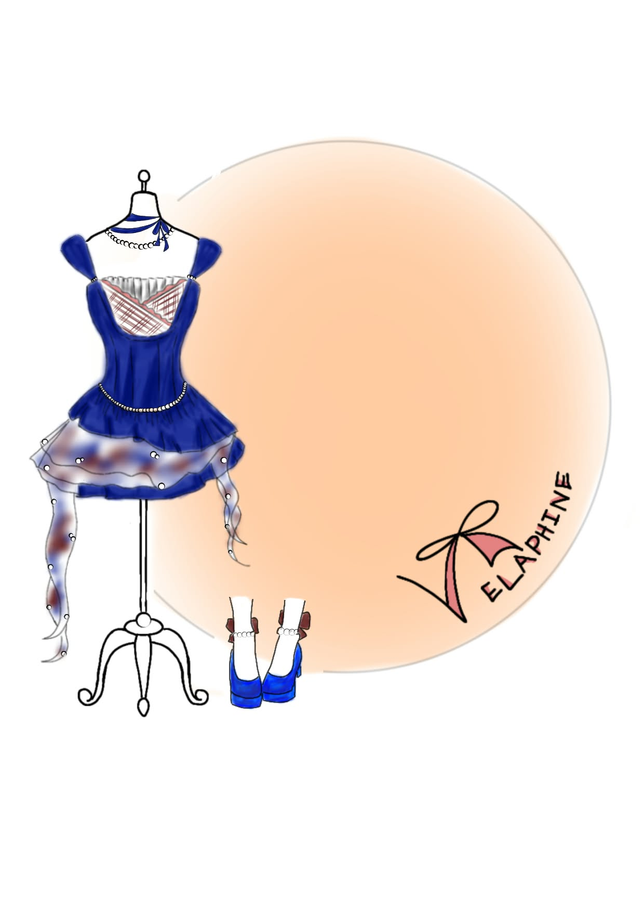

My Projects 🎨
A collection of my creative school projects.

DIGITAL ART
Digital Illustration
A digital artwork created while exploring colors, composition, and personal art style.
Illustration Digital Art
TRADITIONAL ART
Creative Artwork
A traditional art project focused on experimenting with visual elements, drawing, and artistic techniques.
Drawing Art
COMMERCIAL ART
Graphic Design
A strategic project combining typography, imagery, and layout to communicate messages and solve visual problems.
Visual Design Branding